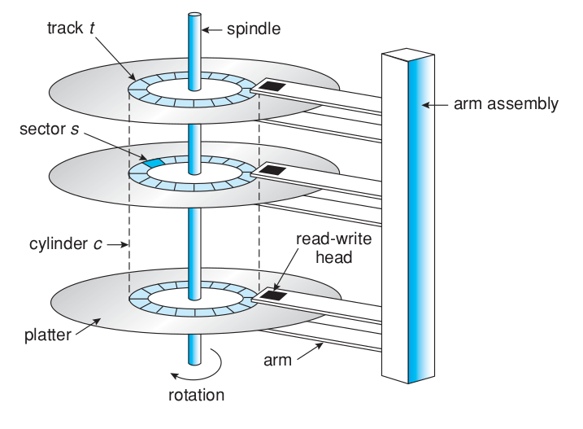
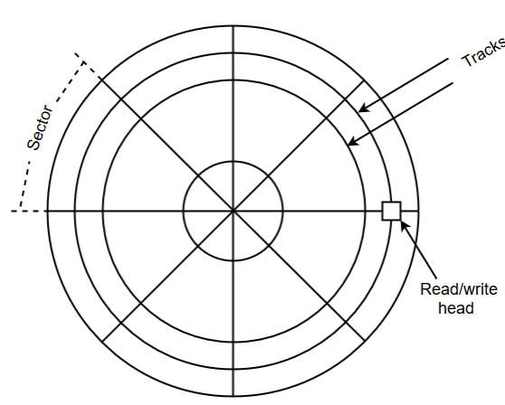
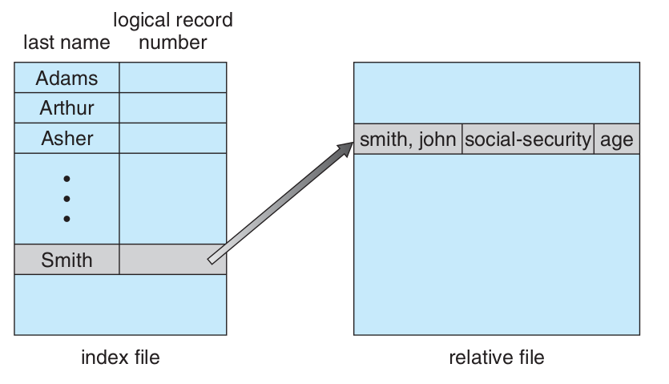
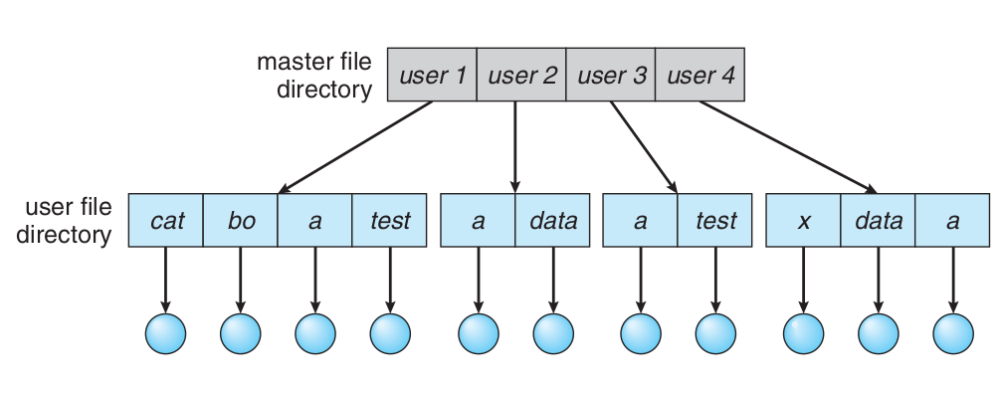
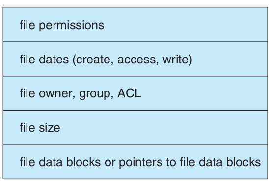
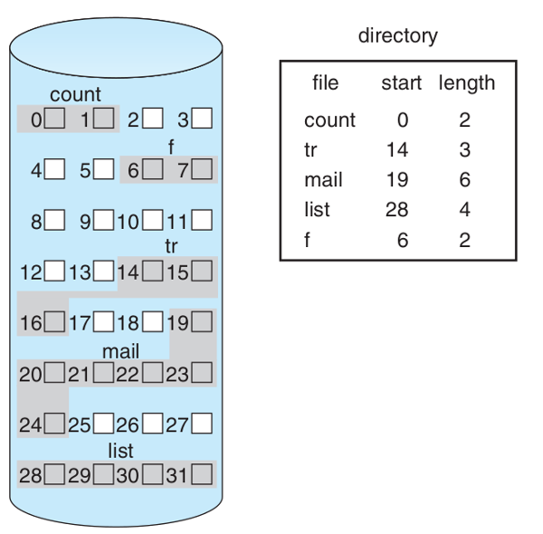
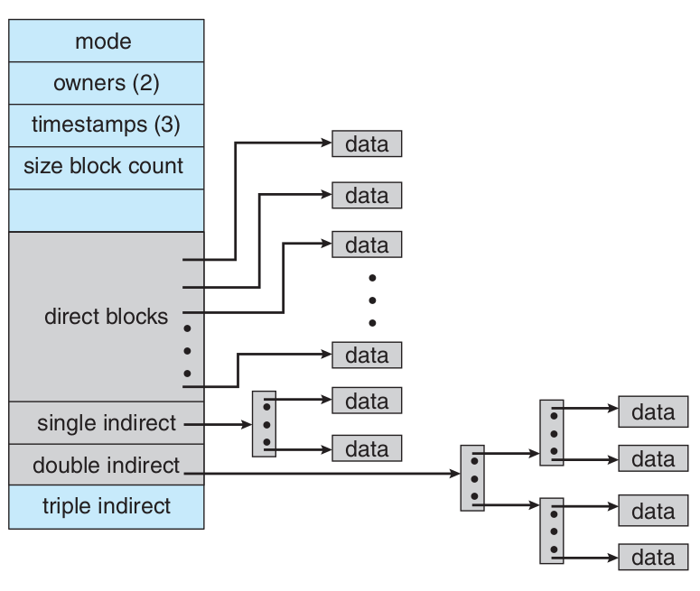
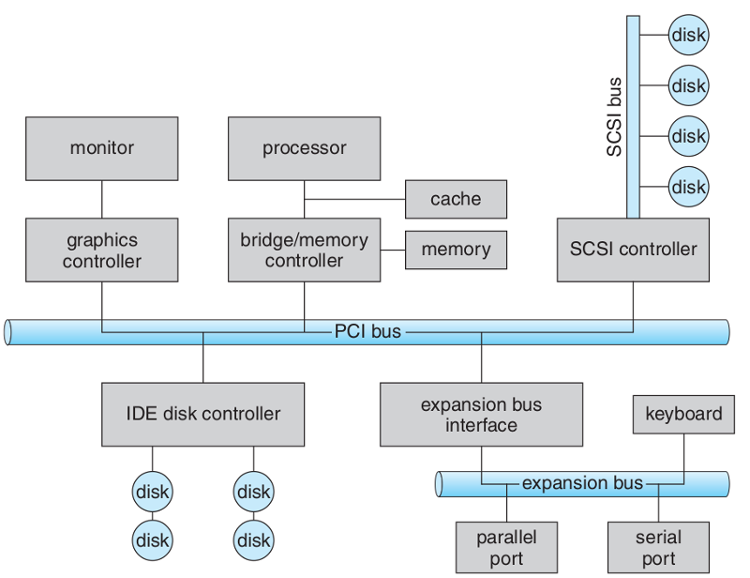
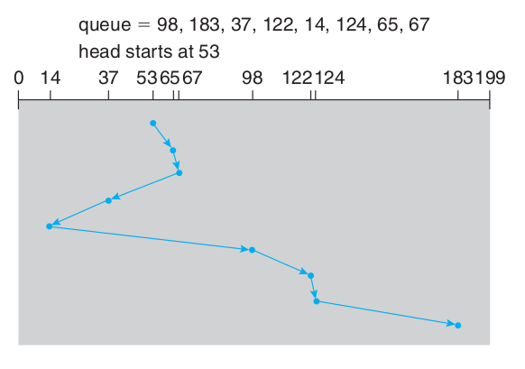
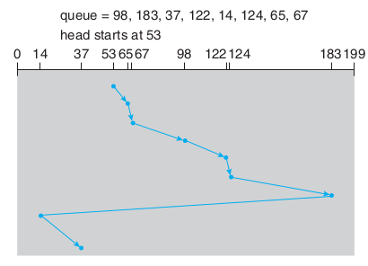

| data-transition-duration: | |
|---|---|
| 1000 | |
| skip-help: | true |
| css: | style.css |
| substep: | true |
| slide-numbers: | true |
|---|
Operating System
Disk management
Ahmad Yoosofan
Spring 2020
Disk
Disk structure

SStorrage Areaa Network(SAN)

File Management System
.
File Access Methods
- Sequential Access
- Random Access
Simple Access Disk
Simple Disk Organization

One Level Structure of Folders

Two Level Structure of Folders
Acyclic Graph based Folder Structure

General Graph based Folder Structure

Multi Level File Structure

Simple Control Block of a File
File struture in Main Memory

- open file
- close file
Schematic View of Virtual File System

Allocation Files Methods
.
Contiguous Block Allocation
- External Fragmentation
- Adding Block to File
- Speed
List Block Allocation

FAT Structure

Index Based Block Allocation

Contiguous Index Based Block Allocation

File Structure in Unix
File Allocation Methods Comparison
| Method | Contiguous | Chained | Indexed | |
|---|---|---|---|---|
| Preallocation? | Necessary | Possible | Possible | |
| Fixed or Variable Size Portions? | Variable | Fixed blocks | Fixed blocks | Variable |
| Portion Size | Large | Small | Small | Medium |
| Allocation Frequency | Once | Low To High | High | Low |
| Time to Allocate | Medium | Long | Short | Medium |
| File Allocation Table Size | One Entry | One Entry | Large | Meduim |
Free Space Management
- How do we keep track free blocks on a disk?
- A free-list is maintained. When a new block is requested, we search this list to find one.
- The following are commonly used techniques:
- Bit Vector
- Linked List
- Linked List + Grouping
- Linked List+Address+Count
List Based

Bit Vector
- Each block is represented by a bit in a table. Thus, if there are n disk blocks, the table has n bits.
- If a block is free, its corresponding bit is 1.
- When a block is needed, the table is searched. If a 1 bit is found in position k, block k is free.
- If the disk capacity is small, the whole bit vector can be stored in memory. For a large disk, this bit vector will consume too much memory.
- We could group a few blocks into a clusterand allocate clusters. This saves space and may cause internal fragmentation.
- Another possibility is the use of a summary table.
Input Output Structure
.
Computer Bus
Hardware Ports

Status of Disk Requests

Disk Scheduling
.
FCFS

SSTF
SCAN

C-SCAN

LOOK
.
C-LOOK
F-SCAN
.
N-Step Scan
.